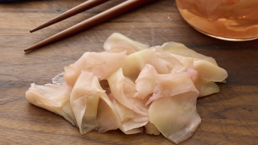

How to Make Pickled Ginger

Description
What Is Pickled Ginger?
Pickled ginger is called gari or amazu shoga in Japanese.
It's served with sushi or sashimi and helps enhance the flavors
and clear your taste buds. It's also great with Century Eggs, a
Chinese delicacy. You can find prepared pickled ginger in pink or
white at most Asian markets but I prefer to make my own and share
with family and friends.
What is Pickled Ginger Made Of?
Here is what you'll need to make homemade pickled ginger:
- Peeled Ginger Root
- Sea Salt
- Rice Vinegar
- White Sugar
Ingredients:
- Peeled Ginger Root: 8 Ounces
- Sea Salt: 1.5 Teaspoons
- Rice Vinegar: 1 Cup
- White Sugar: 1/3 Cup
Steps:
- Gather all ingredients.
- Cut ginger into chunks.
- Place in a bowl, sprinkle with sea salt, and stir to coat. Let stand for about 30 minutes, then transfer to a clean lidded jar.
- Stir together rice vinegar and sugar in a saucepan until sugar has dissolved.
- Bring to a boil, then pour the boiling liquid over ginger root pieces in the jar.
- Allow the mixture to cool, then seal the jar. After a few minutes, the liquid may change to a slightly pinkish color; don't be alarmed. Store in the refrigerator for at least 1 week.
- Cut pieces of ginger into paper-thin slices for serving.